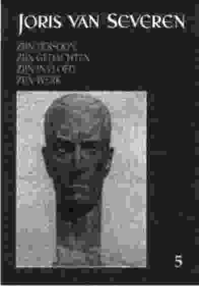

Het - einde mei verschenen - vijfde jaarboek brengt andermaal een aantal gedegen bijdragen die Joris van Severen en zijn beweging tot onderwerp hebben. Daaronder ook drie van de vier referaten die gehouden werden op het in 2000 te Wakken gehouden Tweede colloquium Joris van Severen. Het nieuwe jaarboek groeide aldus andermaal uit tot 208 p. en is ruim geïllustreerd. We overlopen kort de inhoud:
* Aan het IJzerfront maakte Joris van Severen kennis en sloot hij vriendschap met de man die in latere jarer een beroemde cosmoloog - en de vader van de oerknaltheorie - zou worden. In Het absolute geloof van Georges Lemaître belicht Daniël Vanacker, op basis van Van Severens Oorlogsdagboek en de bewaard gebleven correspondentie hun verhouding. Lemaître zette er o.m. zijn op de Genesis gebaseerde theorie uiteen omtrent het ontstaan van de cosmos, maar was ook Van Severens vertrouweling in z'n worsteling met geloof en moraal.
* Tijdens dezelfde oorlogsjaren ontmoette Joris van Severen ook een oudecollegevriend terug, die later onder het pseudoniem Paul Méral bekend en berucht zou worden. In "C'est plus qu'une amitié, notre supérieure et extrême unité". De brieven van Herman de Guchtenaere aan Joris van Severen zoekt Kurt Ravyts naar de raakvlakken waarop die vriendschap kon gedeien. Ook hij maakte daarbij gebruik van Van Severens Oorlogsdagboek en de bewaard gebleven correspondentie. Daaruit maakt de lezer andermaal kennis met onvermoede aspecten van Van Severens rijke persoonlijkheid.
* Met de bijdrage van Maurits Duyck Van Keizer Karel tot Joris van Severen. De idee van de zeventien Provinciën krijgen we lezing van het eerste in deze bundel opgenomen colloquiumreferaat. In feite sloot het colloquium daarmee aan op de herdenkingen n.a.v. het Keizer Kareljaar. Vertrekkend van diens Pragmatieke Sanctie - volgens dewelke alle Nederlanden voor altijd één dienden te blijven - overloopt de auteur de voorbije eeuwen, op zoek naar sporen die deze eenheid beklemtoonden en schraagden. Het zijn er beduidend méér dan onze lessen Geschiedenis ons bijgebracht hebben.
* Een tweede colloquiumreferaat behandelde Joris van Severen en Duitsland.Drs. Luc Pauwels onderzocht Van Severens appreciatie van Duitsland en de Duitse cultuur doorheen de verschillende stadia van zijn leven. Vanaf het IJzerfront tot aan de vooravond van de Tweede Wereldoorlog; vanaf zijn bewondering voor Goethe en Nietzsche tot aan zijn afkeer voor Hitler, loopt een lange weg. Cruciaal in verband met dit laatste is wel het in 1935 door Bertrand de Jouvenel van Van Severen afgenomen interview, waarin hij onverbloemd verklaarde de Hilerianen te verafschuwen.
* In het derde en langste colloquiumreferaat komt drs. Bart de Wever aan het woord. Hij betitelde zijn inbreng met De schaduw van de Leider. Joris van Severen en het na-oorlogs Vlaams-nationalisme. Van hem vernemen we op welke wijze en door middel van welke initiatieven Van Severens gedachtengoed verder leefde na de Tweede Wereldoorlog - en dit zowel in wat de auteur de "Belgicistische" vleugel heet, als op het Vlaams-nationalistische podium. Het is een bijdrage die de nodige stof tot discussie bevat en bij menigeen wel ambivalente gevoelens zal oproepen. Ze geeft niettemin op een correcte wijze de huidige stand van het wetenschappelijke historisch onderzoek weer.
* Dichter en journalist Eric Verstraete was op 20 mei 2000 voor het eerst aanwezig op de herdenking te Abbeville. Aan de diepe indruk die de bedevaart op hem naliet, ontsproot zijn gedicht De adel van zijn geest. De redactie vond het een aangrijpend en waardig sluitstuk voor dit 5e jaarboek.
Het nieuwe jaarboek (ISBN 90-76057-05-2) kan nog tot einde juni tegen
de ledenprijs van 800 BEF besteld worden. Vanaf 15 juli geldt de boekhandelsprijs,
hetzij 900 BEF (+ 100 BEF verzendkosten). Bestellingen: postrekening 000-1705814-69
t.n. van het Studie- en Coördinatiecentrum Joris van Severen, Paddevijverstraat
2, 8900 Ieper.
|
omvang
|
208 pagina's |
|
ISBN
|
90-76057-0-4 |
|
prijs leden
|
20 € inclusief verzendkosten |
|
prijs niet-leden
|
23 € exclusief verzendkosten |
|
verzendingskosten
|
3 € |